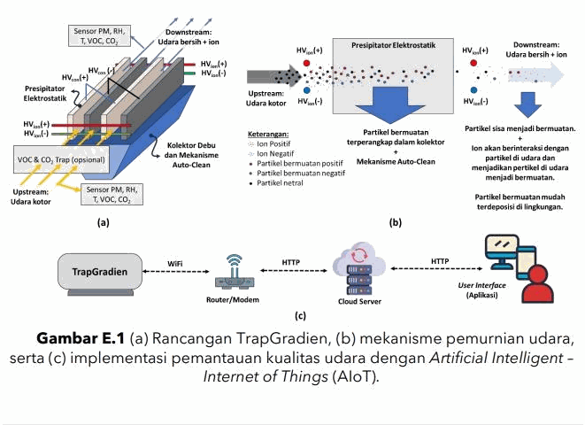
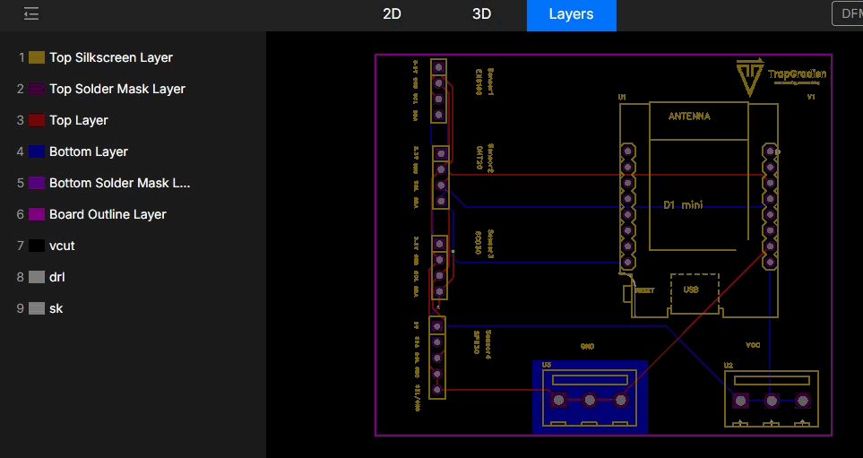
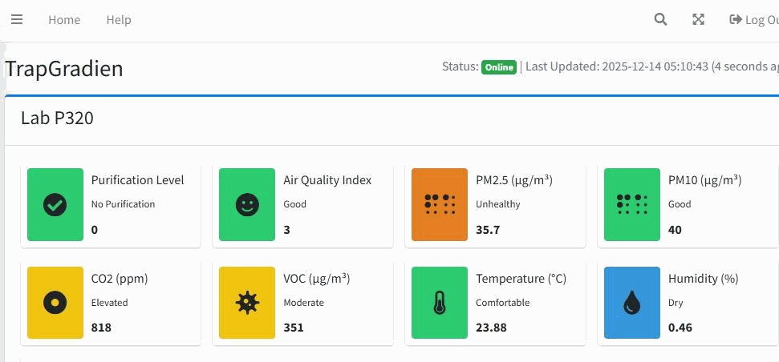
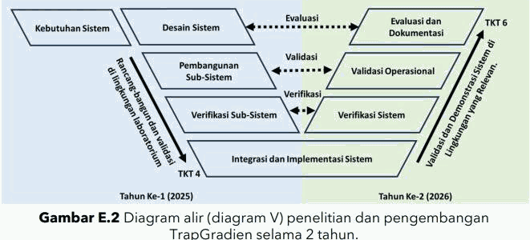

Project · Instrumentation
TrapGradien — Sensor Integration and IoT Air Quality Monitoring

About TrapGradien
TrapGradien is an ioniser-based air filtration system combined with IoT air quality monitoring. It uses positive and negative ions to charge airborne pollutant particles, traps them in a dust collector and releases clean air, with an auto-clean mechanism on the collector.
What I did
- Compared sensor specifications, operating principles, accuracy, power consumption and microcontroller compatibility; supported procurement and bench testing for an MBKM air-filtration research project.
- Designed a Wemos D1 mini sensor PCB in KiCad, assembled breadboard/perforated-board prototypes and tested sensor connections; tested Wi-Fi data transmission through PHP to a MySQL-backed dashboard using a supervisor-provided database.
- Improved a particulate calibration chamber, connected its Mass Flow Controller through Modbus RTU/RS-485 and tested airflow; installed multiplexers for parallel sensing and evaluated battery configurations and voltage regulators.
Sensor measurement subsystem
The sensor subsystem reads air conditions on the upstream (before purification) and downstream (after purification) side. Monitored parameters include particulates (PM), temperature, humidity, VOC and CO₂.
The PCB integrates 4 sensor units on a single board connected to the D1 mini (ESP8266), covering signal routing, sensor communication interfaces and antenna placement for Wi-Fi.


Development methodology
TrapGradien's development follows a V-Model framework across two years of research. The first year (2025) focused on design, build and laboratory validation up to TRL 4. The second year (2026) focuses on validation and demonstration in a relevant environment, up to TRL 6.
